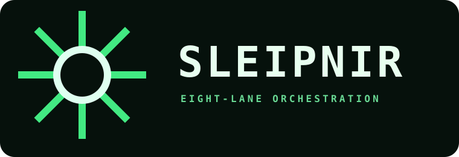

Desktop interface exploration · selection round
Same six real product surfaces in every direction. Compare structure first, then material, density, and interaction rhythm. Open any concept to click through Command, Run graph, Console, Review, Routing, and Trust.